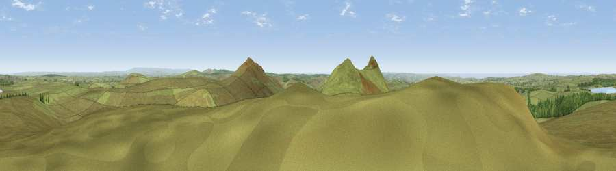

Showery Tor
#3467 in England · top 6% of its area beats it · near TresinneyThe view, rendered

A 360° render of this exact spot computed from the terrain model, tree cover and land cover — summer colours, afternoon light, calibrated against photographs of famous viewpoints. Real trees, hedges and buildings will differ in detail.
The panorama
Grey silhouette: terrain skyline in each direction (720 bearings, Earth curvature and refraction included). Dashed green: skyline with trees (+15 m) and buildings (+8 m) as obstacles. Blue strip: how far the ground is visible on each bearing.
Where the view opens
Wedge length = distance to the farthest visible ground on that bearing (vegetation-aware). Rings at 10, 25 and 50 km.
What fills the view
91% grassland · 5% woodland · 2% water · 1% cropland
Angular shares of the visible panorama (visual magnitude), not map area. Landscape diversity 0.17 (0–1 Shannon).
Key numbers
More beautiful places nearby
The staircase of upgrades: each row has a higher view potential than everything closer. Driving times are estimates from straight-line distance, calibrated against real road routing — check an actual route before setting out.
| Place | Direction | Drive | Score |
|---|---|---|---|
| Little Rough Tor | SSW · 0 km | ~1 min | 73.7 |
| Rough Tor | SW · 1 km | ~2 min | 76.5 |
| Brown Willy | SE · 2 km | ~4 min | 77.3 |
| Viewpoint near Lesnewth | NNW · 9 km | ~18 min | 78.1 |
| Viewpoint near Lesnewth | NNW · 9 km | ~18 min | 82.6 |
| Viewpoint near Boscastle | NW · 10 km | ~19 min | 85.2 |
| Viewpoint near Boscastle | NNW · 12 km | ~23 min | 85.8 |
| Viewpoint near Lesnewth | NNW · 12 km | ~23 min | 87.7 |
50.60224, -4.61617 · source: osm peak · position refined by local search. Computed location — check access rights before visiting.